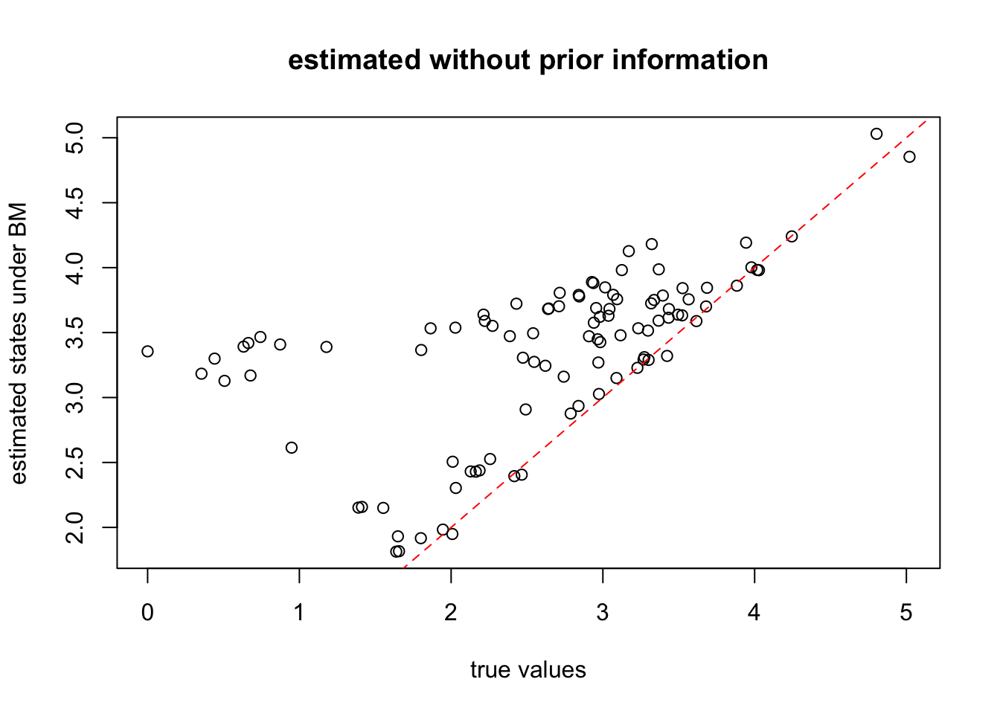
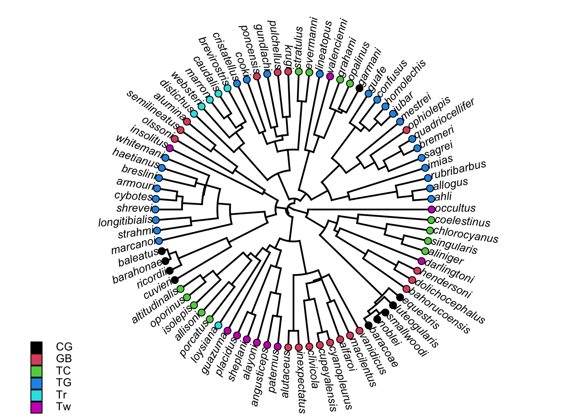

Chapter 18 Character evolution and Ancestral state reconstruction
Adapted from phytools tutorial by Liam J. Revell.
The estimation of phenotypic trait values for ancestral nodes in the tree continues to be an important application of a time-tree from phylogenetic inference.
We are going to explore the methodologies of the reconstruction of continuous and discrete characters, and the potential bias in estimation and quantify the uncertainties using the packages phytools and ape.
18.1 Continuous characters
Let’s start by estimating ancestral states for a a continuous character, in this case overall body size, on a phylogeny of Anolis lizards from the Caribbean.
To estimate the states for a continuously valued character at ancestral nodes, we need find the states that have the highest probability of having arisen under our model informed from Maximum Likelihood estimates.
In Chapter 6, we explored the function ace from the ape package to perform ancestral characters. Here we will use fastAnc from phytools as it improves on the running time.
If the package phytools hasn’t been installed:
install.packages("phytools")18.1.1 load libraries
# phytools will load ape and maps
library(phytools)## Loading required package: ape## Loading required package: maps18.1.2 Tree file and the character file
anole.tree<-read.tree("http://www.phytools.org/eqg2015/data/anole.tre")
plotTree(anole.tree,type="fan",ftype="i")We then read the character states snout-vent lengths (SVL) from a csv file.
svl<-read.csv("http://www.phytools.org/eqg2015/data/svl.csv",row.names=1)
# convert to a vector
svl<-as.matrix(svl)[,1]
head(svl)## ahli alayoni alfaroi aliniger allisoni allogus
## 4.039125 3.815705 3.526655 4.036557 4.375390 4.040138Now we can estimate ancestral states using fastAnc function using Felsentein’s 1985 PIC approach. We will also compute variances & 95% confidence intervals for each node:
?fastAnc
fit<-fastAnc(anole.tree,svl,vars=TRUE,CI=TRUE)
summary(fit)## Length Class Mode
## ace 99 -none- numeric
## var 99 -none- numeric
## CI95 198 -none- numerichead(fit$ace)
head(fit$var)
head(fit$CI95)95% CIs can be quite broad:
fit$CI[1,]
range(svl)18.1.3 Visualization of the reconstructed nodes
phytools has several different methods for visualizing reconstructed ancestral states for a continuous trait on the tree. One is a color gradient projection onto the tree:
# projection of continuous trait on the tree
?contMap
obj<-contMap(tree = anole.tree,x = svl,plot=FALSE)
plot(obj,type="fan",legend=0.7*max(nodeHeights(anole.tree)),fsize=c(0.7,0.9))18.1.4 Visualization of phenotypic evolution
Time is represented on the horizontal axis, and phenotypic evolution on the vertical dimension.
?phenogram
phenogram(anole.tree,svl,fsize=0.6,spread.costs=c(1,0))## Optimizing the positions of the tip labels...Incorporating the uncertainties by displaying the CI of reconstructed states:
phenogram95(anole.tree,svl,fsize=0.6,spread.costs=c(1,0))## Computing density traitgram...
## Optimizing the positions of the tip labels...Then the important next question would be: How accurate is the reconstruction?
18.2 Brownian Motion vs Ornstein-Uhlenbeck Process
To do this, we will use some simulation functions for character evolution in the phytools package. We inspect two scenarios: Brownian Motion (random walk) of character evolution over time and Ornstein–Uhlenbeck process (random walk + directed selection towards a value)
18.3 Brownian Motion
?pbtree
tree<-pbtree(n=26,scale=1,tip.label=LETTERS)
?fastBM
ars_bm<-fastBM(tree,internal=TRUE)
ars_bm## A B C D E F
## -0.933521138 -1.239651739 -0.879686731 -0.394631502 -0.529359049 -1.605159793
## G H I J K L
## -2.263027823 -1.690122365 -0.083137641 -0.082284493 0.240420612 0.339641972
## M N O P Q R
## 0.176788020 0.360521127 0.278645260 -0.405896204 -1.605876255 -0.110699963
## S T U V W X
## -1.773122107 0.113078642 0.080417577 0.135907805 0.073426219 -0.778555110
## Y Z 27 28 29 30
## -1.124301058 -0.815110218 0.000000000 0.146340903 -0.202449874 -0.307705281
## 31 32 33 34 35 36
## -0.789856039 -1.154582130 -0.139602880 -0.194976472 -1.596380054 -0.622620539
## 37 38 39 40 41 42
## -0.136786202 -0.269356603 0.168088674 0.207985368 -0.185453950 0.323712157
## 43 44 45 46 47 48
## -0.331681984 -0.520407602 -0.821697971 -0.960912663 -0.075393808 0.006356082
## 49 50 51
## -0.061993536 0.151145058 -0.255399546The fastBM simulates the characters along the phylogenetic tree, and assign each node and tips some values. We then want to use fastAnc to reconstruc the internal nodes pretending that we only observed the states of the tips. We therefore need to separate the tips from the ancestral nodes:
## ancestral states, labeled as Arabic numbers
a<-ars_bm[as.character(1:tree$Nnode+Ntip(tree))]
## extract tip data
x<-ars_bm[tree$tip.label]Now, let’s estimate ancestral states using fastAnc which uses the PIC algorithm:
fit<-fastAnc(tree,x,CI=TRUE)
fit## Ancestral character estimates using fastAnc:
## 27 28 29 30 31 32 33 34
## -0.912102 -0.937441 -0.817802 -0.804493 -0.990523 -1.038332 -0.887994 -0.872737
## 35 36 37 38 39 40 41 42
## -1.833347 -0.291044 0.021252 0.025754 0.137296 0.152362 0.088978 0.269271
## 43 44 45 46 47 48 49 50
## -0.888075 -0.893963 -0.965820 -0.955744 -0.588914 -0.077958 0.043817 0.093634
## 51
## -0.679270
##
## Lower & upper 95% CIs:
## lower upper
## 27 -1.713774 -0.110429
## 28 -1.618742 -0.256140
## 29 -1.428256 -0.207348
## 30 -1.412964 -0.196023
## 31 -1.278183 -0.702862
## 32 -1.277226 -0.799438
## 33 -1.424763 -0.351224
## 34 -1.452044 -0.293430
## 35 -2.222588 -1.444107
## 36 -0.765932 0.183845
## 37 -0.305576 0.348079
## 38 -0.301242 0.352749
## 39 -0.097564 0.372155
## 40 -0.078646 0.383371
## 41 -0.241205 0.419161
## 42 0.015688 0.522855
## 43 -1.417952 -0.358198
## 44 -1.413557 -0.374369
## 45 -1.502522 -0.429118
## 46 -1.509452 -0.402036
## 47 -1.066782 -0.111046
## 48 -0.449961 0.294046
## 49 -0.232430 0.320064
## 50 -0.053043 0.240311
## 51 -1.149941 -0.208600Let’s compare these estimates to the (normally unknown) actual simulated internal character states:
plot(a,fit$ace,xlab="true states",ylab="estimated states")
lines(range(c(x,a)),range(c(x,a)),lty="dashed",col="red") ## 1:1 lineGenerally speaking, they agree pretty well. Let’s formally inspect this by calculating whether the 95% CI encompass the true value of the states:
mean((a>=fit$CI95[,1])+(a<=fit$CI95[,2]))/2We will get different values for one realization, but generally it’s close to the 95% we used to calculate CI.
18.3.1 Ornstein–Uhlenbeck process
tree<-pbtree(n=100,scale=1)
# fastBM can also simulate an OU process if we set mu to nonzero
ars_OU<-fastBM(tree,internal=TRUE,mu=3)
phenogram(tree,ars_OU,ftype="off",spread.labels=FALSE)Separate ancestral nodes from the tip values
a<-ars_OU[as.character(1:tree$Nnode+Ntip(tree))]
x<-ars_OU[tree$tip.label]Let’s see how bad the reconstruction would be if we ignore the trend
plot(a,fastAnc(tree,x),xlab="true values",
ylab="estimated states under BM")
lines(range(ars_OU),range(ars_OU),lty="dashed",col="red")
title("estimated without prior information")
18.3.2 Incorporate prior knowledge using Bayesian estimates
Set prior knowledge of the mean of states
# Here sig2 indicates the brownian motion parameter (evolutionary rates)
pm<-setNames(c(1000,rep(0,tree$Nnode)),
c("sig2",1:tree$Nnode+length(tree$tip.label)))
# we assume that we acquired some knowledge of the root state and two randomly selected internal nodes
# root node is the one that's right after all the tips
nn<-as.character(c(length(tree$tip.label)+1,
sample(length(tree$tip.label) + (2:tree$Nnode),2)))
pm[nn]<-a[as.character(nn)]
pm## sig2 101 102 103 104 105
## 1000.000000 0.000000 0.000000 0.000000 0.677838 0.000000
## 106 107 108 109 110 111
## 0.000000 0.000000 0.000000 0.000000 0.000000 0.000000
## 112 113 114 115 116 117
## 0.000000 0.000000 0.000000 0.000000 0.000000 0.000000
## 118 119 120 121 122 123
## 0.000000 0.000000 0.000000 0.000000 0.000000 0.000000
## 124 125 126 127 128 129
## 0.000000 0.000000 0.000000 0.000000 0.000000 0.000000
## 130 131 132 133 134 135
## 0.000000 0.000000 0.000000 0.000000 0.000000 0.000000
## 136 137 138 139 140 141
## 0.000000 0.000000 0.000000 0.000000 0.000000 0.000000
## 142 143 144 145 146 147
## 0.000000 0.000000 0.000000 0.000000 0.000000 0.000000
## 148 149 150 151 152 153
## 0.000000 0.000000 0.000000 0.000000 0.000000 0.000000
## 154 155 156 157 158 159
## 0.000000 0.000000 0.000000 0.000000 0.000000 0.000000
## 160 161 162 163 164 165
## 0.000000 0.000000 0.000000 0.000000 0.000000 0.000000
## 166 167 168 169 170 171
## 0.000000 0.000000 0.000000 0.000000 0.000000 0.000000
## 172 173 174 175 176 177
## 0.000000 0.000000 2.213532 0.000000 0.000000 0.000000
## 178 179 180 181 182 183
## 0.000000 0.000000 0.000000 0.000000 0.000000 0.000000
## 184 185 186 187 188 189
## 0.000000 0.000000 0.000000 0.000000 0.000000 0.000000
## 190 191 192 193 194 195
## 0.000000 0.000000 0.000000 0.000000 0.000000 0.000000
## 196 197 198 199
## 0.000000 0.000000 0.000000 0.000000Set prior knowledge of the variance
pv<-setNames(c(1000^2,rep(1000,length(pm)-1)),names(pm))
pv[as.character(nn)]<-1e-100Use Bayesian MCMC to estimate the posterior distribution of the internal nodes states
?anc.Bayes
mcmc<-anc.Bayes(tree,x,ngen=100000,
control=list(pr.mean=pm,pr.var=pv,
a=pm[as.character(length(tree$tip.label)+1)],
y=pm[as.character(2:tree$Nnode+length(tree$tip.label))]))Control parameters (set by user or default):
List of 7
$ sig2 : num 1.01
$ a : Named num 0
..- attr(*, "names")= chr "101"
$ y : Named num [1:98] 0 0 0 0 0 0 0 0 0 0 ...
..- attr(*, "names")= chr [1:98] "102" "103" "104" "105" ...
$ pr.mean: Named num [1:100] 1000 0 0 0 0 0 0 0 0 0 ...
..- attr(*, "names")= chr [1:100] "sig2" "101" "102" "103" ...
$ pr.var : Named num [1:100] 1e+06 1e-100 1e+03 1e+03 1e+03 ...
..- attr(*, "names")= chr [1:100] "sig2" "101" "102" "103" ...
$ prop : num [1:100] 0.0101 0.0101 0.0101 0.0101 0.0101 ...
$ sample : num 100
Starting MCMC...
Done MCMC.head(mcmc$mcmc)
# we get the ancestral states by taking the mean of mcmc outputs over time
# We set the burn-in to 20,000 generations
anc.est<-colMeans(mcmc$mcmc[201:1001,
as.character(1:tree$Nnode+length(tree$tip.label))])
plot(a[names(anc.est)],anc.est,xlab="true values",
ylab="estimated states using informative prior")
lines(range(c(x,a)),range(c(x,a)),lty="dashed",col="red")
title("estimated using informative prior")18.4 Discrete characters
This part of the tutorial focuses on the estimation of ancestral character states for discretely valued traits using a continuous-time Markov chain model commonly known as the Mk model. We are going to apply the ace function in ape as in Chapter 6 first. For other models of evolutionary change not covered by this function, we can use Rich Fitzjohn’s diversitree package.
# read in the built-in dataset of phytools
data(anoletree)
# get the character states
x<-getStates(anoletree,"tips")
tree<-anoletree
rm(anoletree)
# inspect the tree
tree##
## Phylogenetic tree with 82 tips and 81 internal nodes.
##
## Tip labels:
## ahli, allogus, rubribarbus, imias, sagrei, bremeri, ...
##
## The tree includes a mapped, 6-state discrete character
## with states:
## CG, GB, TC, TG, Tr, Tw
##
## Rooted; includes branch lengths.head(x)## ahli allogus rubribarbus imias sagrei bremeri
## "TG" "TG" "TG" "TG" "TG" "TG"plotTree(tree,type="fan",fsize=0.8,ftype="i")
cols<-setNames(palette()[1:length(unique(x))],sort(unique(x)))
tiplabels(pie=to.matrix(x,sort(unique(x))),piecol=cols,cex=0.3)
add.simmap.legend(colors=cols,prompt=FALSE,x=0.9*par()$usr[1],
y=-max(nodeHeights(tree)),fsize=0.8)
Next, let’s fit a single-rate ER model & reconstruct ancestral states at internal nodes in the tree.
fitER<-ace(x,tree,model="ER",type="discrete")
summary(fitER)## Length Class Mode
## loglik 1 -none- numeric
## rates 1 -none- numeric
## se 1 -none- numeric
## index.matrix 36 -none- numeric
## lik.anc 486 -none- numeric
## call 5 -none- callThe element lik.anc gives us the marginal ancestral states by summarizing all the uncertainties in other nodes.
It is fairly straightforward to overlay these posterior probabilities on the tree:
plotTree(tree,type="fan",fsize=0.8,ftype="i")
nodelabels(node=1:tree$Nnode+Ntip(tree),
pie=fitER$lik.anc,piecol=cols,cex=0.5)
tiplabels(pie=to.matrix(x,sort(unique(x))),piecol=cols,cex=0.3)
add.simmap.legend(colors=cols,prompt=FALSE,x=0.9*par()$usr[1],
y=-max(nodeHeights(tree)),fsize=0.8)18.5 Exercises:
Simulate a species tree with 30 taxa, simulate character evolution along the tree with 1) random walk + mu = 4; 2) random walk + mu = -3;
Estimate the internal node states using a PIC approach, and a Bayesian MCMC approach with prior knowledge of the direction of evolution.
Compare the estimated traits and the true simulate traits of the internal nodes and the likelihood from the two methodologies, and explain which one performed better and why.